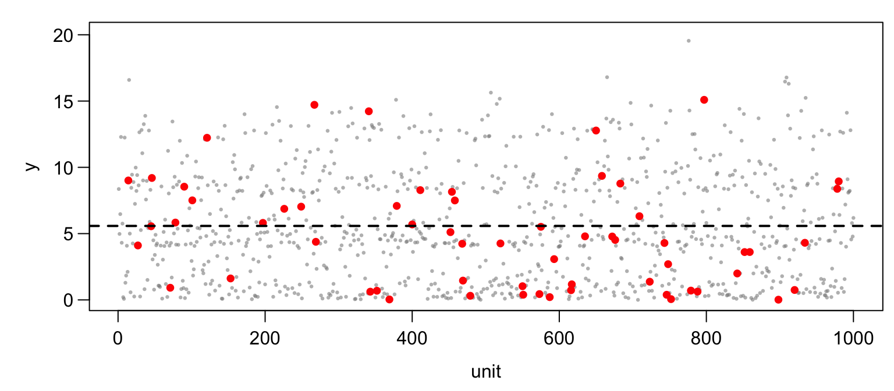
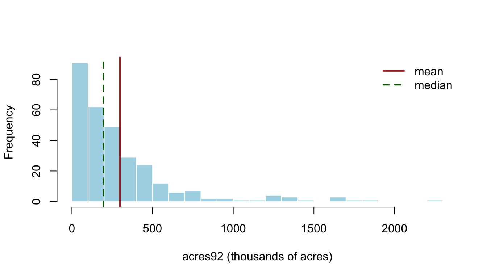
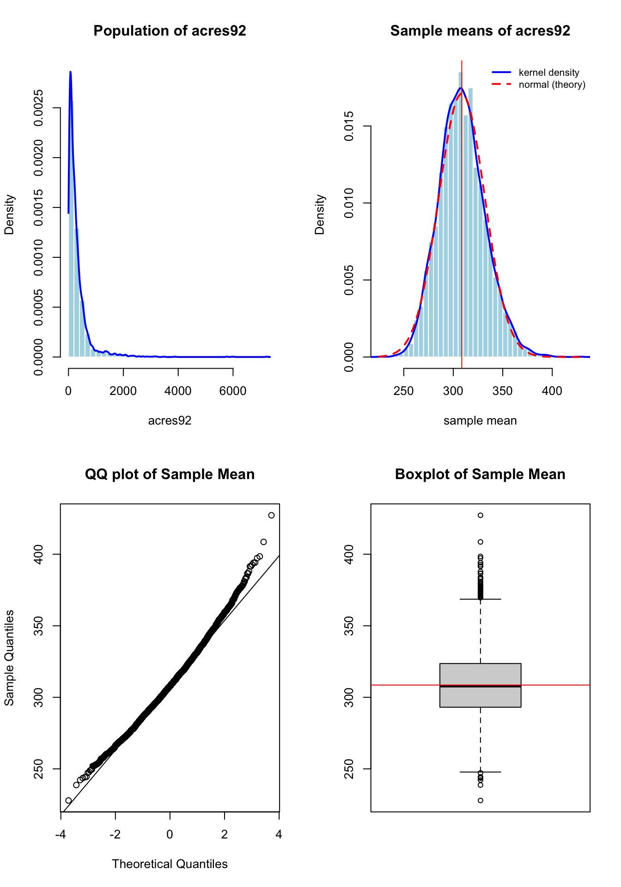
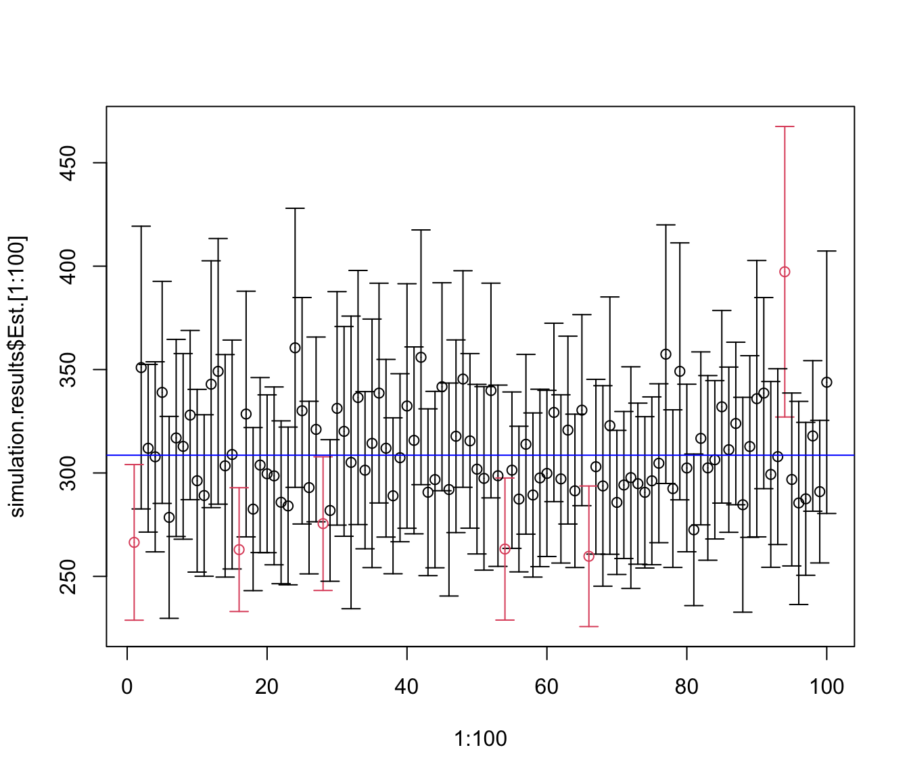

Code
sample(1:N, size = n)Simple random sampling is the simplest probability sampling design, and the building block for all the designs in later chapters. A stratified sample is an SRS within each stratum; a cluster sample is an SRS of clusters. This chapter defines the design, derives its estimators and their standard errors, shows how to build confidence intervals and choose the sample size, and checks the theory by simulation. The material corresponds to Sections 2.3–2.6 and 2.8 of Lohr and Sections 4.1–4.5 of Scheaffer et al.
There are two versions of simple random sampling.
A simple random sample with replacement (SRSWR) of size \(n\) from a population of \(N\) units can be thought of as \(n\) independent draws of one unit, each unit having probability \(1/N\) on every draw. The same unit can be drawn more than once.
A simple random sample without replacement (SRS) of size \(n\) is selected so that every possible subset of \(n\) distinct units in the population has the same probability of being the sample. There are \(\binom{N}{n}\) such subsets, so \[ P(\mathcal S) = \frac{1}{\binom{N}{n}} = \frac{n!\,(N-n)!}{N!} \] for every subset \(\mathcal S\) of size \(n\). Unless stated otherwise, “SRS” in this book means sampling without replacement. In practice an SRS is drawn with computer-generated random numbers; in R,
sample(1:N, size = n)returns the labels of \(n\) distinct units chosen in this way.
Figure 3.1 illustrates an SRS of \(n = 60\) from a synthetic population of \(N = 1000\) units. The design uses no information about the units other than their labels, so the sampled units (red) are scattered at random over the population, and their values cover its whole range.

To study which units end up in the sample, define the sample-membership indicator \[ Z_i = \begin{cases} 1 & \text{if unit } i \text{ is in the sample,} \\ 0 & \text{otherwise.} \end{cases} \] The probability \(\pi_i = P(Z_i = 1)\) is the inclusion probability of unit \(i\). If unit \(i\) is in the sample, the other \(n-1\) sampled units must come from the remaining \(N-1\) units, so \[ \pi_i = P(Z_i=1) = \frac{\text{number of samples including unit } i}{\text{number of possible samples}} = \frac{\binom{N-1}{n-1}}{\binom{N}{n}} = \frac{n}{N}. \] Every unit has the same chance \(n/N\) of being in the sample. The indicators \(Z_1, \ldots, Z_N\) are the only random quantities in design-based inference; we use them in Section 3.6 to prove the properties of the estimators.
Write \(y_i\) for the value of unit \(i\) in the population \(U = \{1, \ldots, N\}\), and \[ \bar{y}_U = \frac{1}{N}\sum_{i=1}^N y_i, \qquad t = \sum_{i=1}^N y_i = N\bar{y}_U, \qquad S^2 = \frac{1}{N-1}\sum_{i=1}^N (y_i - \bar{y}_U)^2 \] for the population mean, total and variance. These are fixed, unknown numbers.
The natural estimator of \(\bar y_U\) is the sample mean, and the natural estimator of \(S^2\) is the sample variance: \[ \bar y = \frac1n \sum_{i \in \mathcal S} y_i = \frac1n \sum_{i=1}^N Z_i y_i, \qquad s^2 = \frac{1}{n-1}\sum_{i\in\mathcal S} (y_i - \bar y)^2 . \] The sample mean is unbiased for \(\bar y_U\), and its variance is \[ V(\bar{y}) = \left(1 - \frac{n}{N}\right)\frac{S^2}{n} \] (both are proved in Section 3.6). This is the familiar \(S^2/n\) of independent sampling, multiplied by the factor \(1 - n/N\), the finite population correction (fpc). Sampling without replacement removes units from the pool, so the sample covers more of the population than independent draws would, and the variance is smaller. When the sampling fraction \(n/N\) is small, the fpc is close to \(1\) and can be ignored. When \(n = N\), the sample is a census and \(V(\bar y) = 0\).
Since \(s^2\) is unbiased for \(S^2\) (also proved in Section 3.6), replacing \(S^2\) by \(s^2\) gives an unbiased estimator of the variance. Its square root is the standard error: \[ \boxed{ \hat{V}(\bar{y}) = \left(1 - \frac{n}{N}\right)\frac{s^2}{n}, \qquad \mathrm{SE}(\bar y) = \sqrt{\Big(1-\frac nN\Big)\frac{s^2}{n}} .} \]
Since \(t = N\bar y_U\), the total is estimated by scaling up the sample mean: \[ \boxed{ \hat{t} = N\bar{y}, \qquad \hat{V}(\hat{t}) = N^2\left(1 - \frac{n}{N}\right)\frac{s^2}{n}, \qquad \mathrm{SE}(\hat{t}) = N\,\mathrm{SE}(\bar{y}).} \]
Sampling weights. The estimated total can also be written with sampling weights. The sampling weight of a unit is the reciprocal of its inclusion probability, \(w_i = 1/\pi_i = N/n\), and \[ \hat t = \sum_{i\in\mathcal S} w_i y_i = \sum_{i\in\mathcal S} \frac{N}{n} y_i . \] Each sampled unit “represents” \(N/n\) units of the population: itself and \(N/n - 1\) unsampled ones. In an SRS all weights are equal; in later chapters (stratified, cluster and unequal-probability sampling) they are not, but the weighted-sum form of \(\hat t\) carries over.
The standard error is in the units of \(y\). A scale-free measure of precision is the coefficient of variation (CV), defined when \(\bar y_U \ne 0\): \[ \mathrm{CV}(\bar y) = \frac{\sqrt{V(\bar y)}}{E(\bar y)} = \sqrt{1-\frac nN}\ \frac{S}{\sqrt n\, \bar y_{U}}, \qquad \widehat{\mathrm{CV}}(\bar y) = \frac{\mathrm{SE}(\bar y)}{\bar y} . \] Because \(\hat t = N\bar y\), the factor \(N\) cancels and \(\mathrm{CV}(\hat t) = \mathrm{CV}(\bar y)\). A CV of 0.05 means the standard error is 5% of the estimate, whatever the units of measurement.
Estimating a proportion is a special case of estimating a mean. Define \(y_i=1\) if unit \(i\) has the characteristic of interest and \(y_i=0\) otherwise. Then the population proportion and the sample proportion are \[ p = \frac{1}{N}\sum_{i=1}^N y_i = \bar y_{U}, \qquad \hat p = \frac1n\sum_{i\in\mathcal S} y_i = \bar y , \] so \(\hat p\) is unbiased for \(p\). For a 0/1 variable \(y_i^2 = y_i\), and the variances simplify: \[ S^2 = \frac{N}{N-1}\,p(1-p), \qquad s^2 = \frac{n}{n-1}\,\hat p(1-\hat p). \] Substituting into the general formulas, \[ V(\hat p) = \Big(\frac{N-n}{N-1}\Big)\frac{p(1-p)}{n}, \qquad \boxed{\hat V(\hat p) = \Big(1-\frac nN\Big)\frac{\hat p (1-\hat p)}{n-1}.} \] The number of units with the characteristic, \(Np\), is estimated by \(N\hat p\) with standard error \(N\,\mathrm{SE}(\hat p)\).
The U.S. government conducts a Census of Agriculture every five years. It collects data on all farms (any place producing $1000 or more of agricultural products) in the 50 states, for each of the \(N=3078\) counties and county-equivalents. The file agpop.csv contains the 1982, 1987 and 1992 farm data for the whole population. An SRS of \(n=300\) counties was selected with computer-generated random numbers and saved as agsrs.csv. We use it to estimate the mean and total of acres92, the number of acres devoted to farms in 1992, and the proportion of counties with fewer than 200,000 acres in farms.
Throughout the agriculture examples in this book, county acreages are expressed in thousands of acres. The raw figures run into the millions, and every mean, variance and total reads far more easily on that scale. The helper acres_in_thousands() performs the conversion as the data are read.
We first compute the estimates directly from the formulas of Section 3.2.
## read survey data
agsrs <- read.csv ("data/agsrs.csv")
## work in thousands of acres, the unit used for every agriculture example here
agsrs[c("acres92", "acres87", "acres82")] <- agsrs[c("acres92", "acres87", "acres82")] / 1000
head(agsrs)## extract the variable of interest
sdata <- agsrs$acres92
N <- 3078
## do calculation
n <- length (sdata)
ybar <- mean (sdata)
s <- sd (sdata)
se.ybar <- sqrt((1 - n / N)) * s / sqrt(n)
mem <- qt (0.975, df = n - 1) * se.ybar
## return estimate vector for pop mean
c (Est. = ybar, S.E. = se.ybar, ci.low = ybar - mem, ci.upp = ybar + mem) Est. S.E. ci.low ci.upp
297.89705 18.89843 260.70626 335.08784 ## return estimate vector for pop total
c (Est. = ybar, S.E. = se.ybar, ci.low = ybar - mem, ci.upp = ybar + mem) * N Est. S.E. ci.low ci.upp
916927.11 58169.38 802453.86 1031400.36 In thousands of acres, the sample gives \(\bar y = 297.897\) and \(s = 344.55\), so \[ \mathrm{SE}(\bar y) = \sqrt{\Big(1-\frac{300}{3078}\Big)\frac{344.55^2}{300}} = 18.898, \] \[ \hat t = N\bar y = 3078(297.897) = 916,927, \qquad \mathrm{SE}(\hat t) = 3078(18.898) = 58,169 . \] The average county has about 298 thousand acres in farms, and the U.S. total is estimated at about 917 million acres. The estimated coefficient of variation is \[ \widehat{\mathrm{CV}}(\hat t) = \widehat{\mathrm{CV}}(\bar y) = \frac{\mathrm{SE}(\bar y)}{\bar y} = \frac{18.898}{297.897} = 0.0634, \] so the standard error is about 6.3% of the estimate.
The data are highly skewed (Figure 3.2): most counties have fewer than 500 thousand acres in farms, but some have more than 1.5 million. For such data the mean is pulled up by the long right tail, and we should also report the median, which is 196.7 thousand acres here, well below the mean.
hist(sdata, breaks = 30, col = "lightblue", border = "white",
xlab = "acres92 (thousands of acres)", main = "")
abline(v = c(ybar, median(sdata)), col = c("firebrick", "darkgreen"), lwd = 2, lty = c(1, 2))
legend("topright", bty = "n", lwd = 2, lty = c(1, 2), col = c("firebrick", "darkgreen"),
legend = c("mean", "median"))
A proportion. Let \(y_i = 1\) if county \(i\) has fewer than 200 thousand acres in farms. In the sample, 153 of the 300 counties do, so \(\hat p = 153/300 = 0.51\) and \[ \mathrm{SE}(\hat p) = \sqrt{\Big(1-\frac{300}{3078}\Big)\frac{(0.51)(0.49)}{299}} = 0.0275 . \]
The same calculation is needed again and again, so we wrap it in a function. To avoid repeating code in every chapter, all estimating functions (and their gt table formatting helpers) live in a single shared file, samplingestimate.r, sourced at the start of this chapter. The SRS function is srs_est().
samplingestimate.r)
# =============================================================
# Shared estimation functions for the Elements of Sampling Survey
# book. Source this file from any chapter that needs point/SE/CI
# estimators or their gt-table formatting helpers, e.g.:
#
# source("samplingestimate.r")
#
# =============================================================
suppressPackageStartupMessages({
library(gt)
})
# ---------------------------------------------------------
# Shared gt-table helpers
# ---------------------------------------------------------
## Formats a gt table column as ordinary fixed-point, UNLESS its values are
## too small (< `small` in absolute value) or too large (>= `large`), in
## which case it switches that column to scientific notation (rendered as
## "m x 10^n" via gt's exp_style = "x10n") instead.
fmt_auto <- function (gt_tbl, data, columns, decimals = 2, small = 1e-3, large = 1e5)
{
for (col in columns)
{
x <- data[[col]]
x <- x[is.finite (x) & x != 0]
if (length (x) == 0) next
## judge by the column's TYPICAL magnitude, not by its extremes: the
## Sum row is n times the size of a data row, and one residual that
## lands near zero should not push a whole column into scientific
typical <- stats::median (abs (x))
if (typical < small || typical >= large)
gt_tbl <- fmt_scientific (gt_tbl, columns = tidyselect::all_of (col), decimals = decimals, exp_style = "x10n")
else
gt_tbl <- fmt_number (gt_tbl, columns = tidyselect::all_of (col), decimals = decimals)
}
gt_tbl
}
## Formats a single scalar for inline formula display (fixed-point with
## thousands separators, switching to "m \times 10^{n}" LaTeX scientific
## notation for very small or very large magnitudes, mirroring fmt_auto()'s
## use of exp_style = "x10n") --- used to show worked-example steps such as
## \bar y = sum/n with the actual numbers plugged in.
fmt_num <- function (x, decimals = 2, small = 1e-3, large = 1e5)
{
use_sci <- is.finite (x) & x != 0 & (abs (x) < small | abs (x) >= large)
exps <- ifelse (x == 0, 0, floor (log10 (abs (x))))
mant <- ifelse (x == 0, 0, x / 10^exps)
ifelse (use_sci,
sprintf ("%s \\times 10^{%d}", formatC (mant, format = "f", digits = decimals), exps),
formatC (x, format = "f", digits = decimals, big.mark = ","))
}
## The agriculture files (agpop.csv and the samples drawn from it: agsrs.csv,
## agstrat.csv, ...) record county acreages in acres, which run into the
## millions and make every working table below hard to read. This converts the
## acreage columns to THOUSANDS of acres, so a mean reads as 297.9 rather than
## 297,897, and a variance as 2.0e5 rather than 2.0e11. The file's missing-value
## code, -99, becomes NA first, so it cannot be silently rescaled to -0.099.
## d --- data frame just read from one of those files
## cols --- acreage columns to convert (those absent from d are ignored)
acres_in_thousands <- function (d, cols = c ("acres92", "acres87", "acres82"))
{
cols <- intersect (cols, names (d))
d[cols] <- lapply (d[cols], function (x) { x[x == -99] <- NA; x / 1000 })
d
}
## Truncates a row-level working data.frame whose LAST row is a summary row
## (e.g. "Sum"/"Total"): if there are more than head_n data rows (excluding
## that summary row), keeps only the first head_n data rows, inserts one
## "..." placeholder row, then the summary row --- so long working tables
## stay readable. id_col --- name of the row-label column.
truncate_working <- function (working, id_col, head_n = 6)
{
n <- nrow (working) - 1
if (n <= head_n + 1) return (working)
dots <- working[1, ]
dots[1, ] <- NA
dots[1, id_col] <- "..."
rbind (working[seq_len (head_n), ], dots, working[nrow (working), ])
}
# Helper function to format estimation outputs with appropriate mathematical headers
format_est_gt <- function(est_data, est_type = c("mean", "total", "ratio", "reg_mean", "reg_total", "ratio_mean", "domain_mean",
"hh_total", "hh_mean", "hh_ratio_mean")) {
est_type <- match.arg(est_type)
sym_map <- list(
"mean" = c(est = "$\\bar{y}$", se = "$\\mathrm{SE}(\\bar{y})$"),
"total" = c(est = "$\\hat{t}$", se = "$\\mathrm{SE}(\\hat{t})$"),
"ratio" = c(est = "$\\hat{B}$", se = "$\\mathrm{SE}(\\hat{B})$"),
"reg_mean" = c(est = "$\\bar{y}_{reg}$", se = "$\\mathrm{SE}(\\bar{y}_{reg})$"),
"reg_total" = c(est = "$\\hat{t}_{reg}$", se = "$\\mathrm{SE}(\\hat{t}_{reg})$"),
"ratio_mean" = c(est = "$\\bar{y}_{r}$", se = "$\\mathrm{SE}(\\bar{y}_{r})$"),
"domain_mean" = c(est = "$\\bar{y}_{d}$", se = "$\\mathrm{SE}(\\bar{y}_{d})$"),
## UPSWR (Hansen-Hurwitz): total, mean per unit, and ratio (mean per element)
"hh_total" = c(est = "$\\hat{t}_{\\mathrm{HH}}$",
se = "$\\mathrm{SE}(\\hat{t}_{\\mathrm{HH}})$"),
"hh_mean" = c(est = "$\\hat{\\bar{t}}_{\\mathrm{HH}}$",
se = "$\\mathrm{SE}(\\hat{\\bar{t}}_{\\mathrm{HH}})$"),
"hh_ratio_mean" = c(est = "$\\hat{\\bar{y}}_{\\mathrm{HH},r}$",
se = "$\\mathrm{SE}(\\hat{\\bar{y}}_{\\mathrm{HH},r})$")
)
est_sym <- sym_map[[est_type]]["est"]
se_sym <- sym_map[[est_type]]["se"]
# Convert to data frame. Use unname() to strip hidden lm() coefficient names
if (is.vector(est_data) && !is.list(est_data)) {
df <- as.data.frame(t(unname(est_data)))
} else {
df <- as.data.frame(est_data)
}
# Force standard column names so gt() never gets confused
colnames(df) <- c("Est.", "S.E.", "ci.low", "ci.upp")
# Check if we should use rownames as a stub
use_stub <- !is.null(rownames(df)) && !all(rownames(df) == as.character(1:nrow(df)))
df |>
gt(rownames_to_stub = use_stub) |>
cols_label(
Est. = md(est_sym),
S.E. = md(se_sym),
ci.low = md("95% CI Lower"),
ci.upp = md("95% CI Upper")
) |>
fmt_number(
columns = everything(),
decimals = 2
) |>
tab_options(table.width = pct(70))
}
## Formats an lm object as two gt tables, replacing the plain-text
## summary(lmfit) output:
## $coef --- coefficient table (Estimate, S.E., t value, p value)
## $fit --- one-row table of model fit statistics, including R^2
## returns list($coef, $fit)
format_lm_gt <- function (lmfit)
{
s <- summary (lmfit)
coef_df <- as.data.frame (s$coefficients)
colnames (coef_df) <- c ("Estimate", "S.E.", "t value", "p value")
coef_gt <- coef_df |>
gt (rownames_to_stub = TRUE) |>
fmt_number (columns = c ("Estimate", "S.E.", "t value"), decimals = 4) |>
fmt_number (columns = "p value", decimals = 4) |>
tab_header (title = "Coefficient Estimates") |>
tab_options (table.width = pct(70))
fstat <- s$fstatistic
fit_df <- data.frame (
R.squared = s$r.squared,
Adj.R.squared = s$adj.r.squared,
Sigma = s$sigma,
F.statistic = unname (fstat["value"]),
p.value = unname (pf (fstat["value"], fstat["numdf"], fstat["dendf"], lower.tail = FALSE))
)
fit_gt <- fit_df |>
gt () |>
cols_label (
R.squared = md ("$R^2$"),
Adj.R.squared = md ("Adj. $R^2$"),
Sigma = md ("$\\hat\\sigma$"),
F.statistic = "F-statistic",
p.value = "p-value"
) |>
fmt_number (columns = everything (), decimals = 4) |>
tab_header (title = "Model Fit Summary") |>
tab_options (table.width = pct(70))
list (coef = coef_gt, fit = fit_gt)
}
# ---------------------------------------------------------
# Base Estimators
# ---------------------------------------------------------
## sdata --- a vector of original survey data
## N --- population size
## estimate --- "mean" (default) returns the population MEAN estimate;
## "total" returns the population TOTAL estimate (N * mean,
## with SE/CI scaled accordingly); requires finite N
## show.details --- if TRUE (default), also return a gt table of the
## row-level working values y_i, the fitted value \hat y_i
## (constant, and equal to \bar y under the SRS model),
## e_i = y_i-\hat y_i, and e_i^2, with a Sum row and a
## footnote showing s_y^2; NULL otherwise
## col_labels --- named list (y, yhat, dev, ybar, s) of RAW latex: the
## data, fitted and deviation columns, the symbol for the
## sample mean, and for the sample SD; a partial list fills in
## the remaining defaults, so callers can override just one label
## title --- the working table's title
## returns list ($estimate = c(Est., S.E., ci.low, ci.upp), $table)
srs_est <- function (sdata, N = Inf, estimate = c ("mean", "total"),
show.details = TRUE, col_labels = list (),
title = "SRS Mean Estimation: Working Table")
{
estimate <- match.arg (estimate)
col_labels <- modifyList (list (y = "y_i", yhat = "\\hat y_i", dev = "e_i",
ybar = "\\bar y", s = "s_y"), col_labels)
ybar_lab <- col_labels$ybar
s_lab <- col_labels$s
n <- length (sdata)
ybar <- mean (sdata)
dev <- sdata - ybar
s2y <- sum (dev^2) / (n - 1)
se.ybar <- sqrt((1 - n / N)) * sd (sdata) / sqrt(n)
if (estimate == "total")
{
if (!is.finite (N))
stop ("N must be finite to compute estimate = \"total\"")
est <- N * ybar
se.est <- N * se.ybar
}
else
{
est <- ybar
se.est <- se.ybar
}
mem <- qt (0.975, df = n - 1) * se.est
estimate_vec <- c (Est. = est, S.E. = se.est, ci.low = est - mem, ci.upp = est + mem)
if (!show.details)
return (list (estimate = estimate_vec, table = NULL))
working <- data.frame (
i = c (seq_len (n), "Sum"),
y = c (sdata, sum (sdata)),
yhat = rep (ybar, n + 1),
dev = c (dev, sum (dev)),
dev2 = c (dev^2, sum (dev^2))
)
working <- truncate_working (working, id_col = "i")
table <- gt (working) |>
tab_header (title = title, subtitle = md (sprintf ("$n = %d$", n))) |>
cols_label (
i = md ("$i$"),
y = md (sprintf ("$%s$", col_labels$y)),
yhat = md (sprintf ("$%s$", col_labels$yhat)),
dev = md (sprintf ("$%s$", col_labels$dev)),
dev2 = md (sprintf ("$(%s-%s)^2$", col_labels$y, col_labels$yhat))
) |>
cols_width (i ~ px (40), everything () ~ px (110)) |>
fmt_auto (data = working, columns = c ("y", "yhat", "dev", "dev2"), decimals = 2) |>
sub_missing (missing_text = "...") |>
tab_style (
style = cell_text (weight = "bold"),
locations = cells_body (rows = i == "Sum")
) |>
tab_footnote (
footnote = md (paste0 (
if (col_labels$yhat != ybar_lab)
sprintf ("$%s = %s$ for every unit under the SRS model; ", col_labels$yhat, ybar_lab),
sprintf ("$%s^2 = \\sum_i (%s-%s)^2/(n-1) = %s$.",
s_lab, col_labels$y, col_labels$yhat, fmt_num (s2y)))),
locations = cells_column_labels (columns = dev2)
) |>
tab_source_note (
source_note = md (if (estimate == "total")
sprintf ("$\\hat t = N%s = %s \\times %s = %s$",
ybar_lab, fmt_num (N, 0), fmt_num (ybar), fmt_num (est))
else
sprintf ("$%s = \\dfrac{\\sum_i %s}{n} = \\dfrac{%s}{%d} = %s$",
ybar_lab, col_labels$y, fmt_num (sum (sdata)), n, fmt_num (ybar)))
) |>
tab_source_note (
source_note = md (if (estimate == "total")
sprintf ("$\\mathrm{SE}(\\hat t) = N \\times \\mathrm{SE}(%s) = %s \\times %s = %s$",
ybar_lab, fmt_num (N, 0), fmt_num (se.ybar), fmt_num (se.est))
else if (is.finite (N))
sprintf ("$\\mathrm{SE}(%s) = \\sqrt{1-\\dfrac{n}{N}}\\,\\dfrac{%s}{\\sqrt n} = \\sqrt{1-\\dfrac{%d}{%d}}\\,\\dfrac{%s}{\\sqrt{%d}} = %s$",
ybar_lab, s_lab, n, N, fmt_num (sqrt (s2y)), n, fmt_num (se.ybar))
else
sprintf ("$\\mathrm{SE}(%s) = \\dfrac{%s}{\\sqrt n} = \\dfrac{%s}{\\sqrt{%d}} = %s$",
ybar_lab, s_lab, fmt_num (sqrt (s2y)), n, fmt_num (se.ybar)))
)
list (estimate = estimate_vec, table = table)
}
## ydata --- observations of the variable of interest
## xdata --- observations of the auxiliary variable
## xbarU --- population mean of the auxiliary variable; required when
## estimate is "mean" or "total"; ignored when estimate = "model"
## N --- population size
## estimate --- "mean" (default) returns the ratio estimate of the
## population MEAN of y, Bhat*xbarU; "total" returns the ratio
## estimate of the population TOTAL of y (requires finite N);
## "model" returns the raw ratio coefficient Bhat = ybar/xbar
## itself (with its own SE)
## show.details --- if TRUE (default), also return a gt table of the
## row-level working values y_i, x_i, fitted yhat_i =
## Bhat*x_i, residual e_i, and e_i^2, with a Sum row and a
## footnote showing Bhat and s_e^2; NULL otherwise
## col_labels --- named list (y, x, yhat) of RAW latex for those
## working-table columns, so this function can be reused
## (e.g. by cluster_ratio(), upswr_ratio()) with
## context-appropriate labels
## extra_col --- optional column spec, or list of column specs, adding
## RAW-latex-labelled columns of per-unit `values` right before
## the y column of the working table (e.g. the within-cluster
## means $\bar y_i$ used by cluster_ratio() to build $\hat
## t_i = \bar y_i M_i$); a spec is a list (label, values,
## formula, total): `formula` (optional) is shown as a footnote
## on the y column documenting that relationship, and
## `total = TRUE` puts the column's sum in the Sum row
## tail_col --- optional column spec, or list of specs, in the same format,
## appended AFTER the $e_i^2$ column (e.g. the per-cluster
## second-stage variance contributions $\hat v_i$); each spec's
## `formula` is footnoted on its own column
## var2 --- extra variance component to add to $\hat V(\hat B)\,\bar x^2$,
## i.e. $\hat V(\hat B) = [(1-n/N) s_e^2/n + \mathrm{var2}]/\bar x^2$;
## 0 (default) gives the usual one-stage ratio variance. Used by
## cluster_ratio() to add the within-cluster (second-stage) term
## var2_label --- RAW latex for that extra term, shown symbolically in the
## standard-error source note when var2 > 0
## xbar_label --- RAW latex naming $\bar x$ in the standard-error note
## (cluster_ratio() passes "\\bar M", the mean cluster size)
## returns list ($estimate = c(Est., S.E., ci.low, ci.upp), $table)
ratio_est <- function (ydata, xdata, xbarU = NULL, N = Inf,
estimate = c ("mean", "total", "model"), show.details = TRUE,
col_labels = list (y = "y_i", x = "x_i", yhat = "\\hat y_i"),
extra_col = NULL, B_label = "\\hat B",
tail_col = NULL, var2 = 0, var2_label = NULL,
xbar_label = "\\bar x")
{
estimate <- match.arg (estimate)
n <- length (xdata)
xbar <- mean (xdata)
ybar <- mean (ydata)
B_hat <- ybar / xbar
yhat <- B_hat * xdata
e <- ydata - yhat
var_e <- sum (e^2) / (n - 1)
sd_B_hat <- sqrt ((1 - n/N) * var_e / n + var2) / xbar
if (estimate == "model")
{
est <- B_hat
sd_est <- sd_B_hat
}
else
{
if (is.null (xbarU))
stop ("xbarU (population mean of x) is required when estimate is \"mean\" or \"total\"")
if (estimate == "total")
{
if (!is.finite (N))
stop ("N must be finite to compute estimate = \"total\"")
est <- B_hat * xbarU * N
sd_est <- sd_B_hat * xbarU * N
}
else
{
est <- B_hat * xbarU
sd_est <- sd_B_hat * xbarU
}
}
mem <- qt (0.975, df = n - 1) * sd_est
estimate_vec <- c (Est. = est, S.E. = sd_est, ci.low = est - mem, ci.upp = est + mem)
if (!show.details)
return (list (estimate = estimate_vec, table = NULL))
## a column spec is list (label, values, formula, total); accept either one
## spec or a list of them, so callers can add several columns at once
norm_specs <- function (x)
if (is.null (x)) list () else if (!is.null (x$label)) list (x) else x
extras <- norm_specs (extra_col)
tails <- norm_specs (tail_col)
nm <- function (specs, prefix) if (length (specs)) paste0 (prefix, seq_along (specs)) else character (0)
e_nms <- nm (extras, "extra")
t_nms <- nm (tails, "tail")
add_specs <- function (cols, specs, nms)
{
for (k in seq_along (specs))
cols[[nms[k]]] <- c (specs[[k]]$values,
if (isTRUE (specs[[k]]$total)) sum (specs[[k]]$values) else NA)
cols
}
working_cols <- add_specs (list (i = c (seq_len (n), "Sum")), extras, e_nms)
working_cols$y <- c (ydata, sum (ydata))
working_cols$x <- c (xdata, sum (xdata))
working_cols$yhat <- c (yhat, sum (yhat))
working_cols$e <- c (e, sum (e))
working_cols$e2 <- c (e^2, sum (e^2))
working_cols <- add_specs (working_cols, tails, t_nms)
working <- as.data.frame (working_cols, check.names = FALSE)
working <- truncate_working (working, id_col = "i")
fmt_cols <- c (e_nms, "y", "x", "yhat", "e", "e2", t_nms)
label_args <- list (i = md ("$i$"))
for (k in seq_along (extras))
label_args[[e_nms[k]]] <- md (sprintf ("$%s$", extras[[k]]$label))
label_args$y <- md (sprintf ("$%s$", col_labels$y))
label_args$x <- md (sprintf ("$%s$", col_labels$x))
label_args$yhat <- md (sprintf ("$%s$", col_labels$yhat))
label_args$e <- md ("$e_i$")
label_args$e2 <- md ("$e_i^2$")
for (k in seq_along (tails))
label_args[[t_nms[k]]] <- md (sprintf ("$%s$", tails[[k]]$label))
table <- gt (working) |>
tab_header (title = "Ratio Estimation: Working Table", subtitle = md (sprintf ("$n = %d$", n)))
table <- do.call (cols_label, c (list (table), label_args))
table <- table |>
cols_width (i ~ px (40), everything () ~ px (100)) |>
fmt_auto (data = working, columns = fmt_cols, decimals = 2) |>
sub_missing (missing_text = "...") |>
tab_style (
style = cell_text (weight = "bold"),
locations = cells_body (rows = i == "Sum")
) |>
tab_footnote (
footnote = md (sprintf ("$\\hat B = \\sum_i %s / \\sum_i %s = %s$, $%s = \\hat B\\, %s$, $s_e^2 = %s$.",
col_labels$y, col_labels$x, fmt_num (B_hat), col_labels$yhat, col_labels$x, fmt_num (var_e))),
locations = cells_column_labels (columns = yhat)
)
## an extra column's formula documents how it feeds the y column; a tail
## column's formula belongs on the tail column itself
for (k in seq_along (extras))
if (!is.null (extras[[k]]$formula))
table <- table |>
tab_footnote (
footnote = md (sprintf ("$%s$.", extras[[k]]$formula)),
locations = cells_column_labels (columns = y)
)
for (k in seq_along (tails))
if (!is.null (tails[[k]]$formula))
table <- table |>
tab_footnote (
footnote = md (sprintf ("$%s$.", tails[[k]]$formula)),
locations = cells_column_labels (columns = tidyselect::all_of (t_nms[k]))
)
table <- table |>
tab_source_note (
source_note = md (if (estimate == "model")
sprintf ("$%s = \\dfrac{\\sum_i %s}{\\sum_i %s} = \\dfrac{%s}{%s} = %s$",
B_label, col_labels$y, col_labels$x, fmt_num (sum (ydata)), fmt_num (sum (xdata)), fmt_num (B_hat))
else if (estimate == "total")
sprintf ("$\\hat t = \\hat B\\,\\bar x_U\\,N = %s \\times %s \\times %s = %s$",
fmt_num (B_hat), fmt_num (xbarU), fmt_num (N, 0), fmt_num (est))
else
sprintf ("$\\bar y_r = \\hat B\\,\\bar x_U = %s \\times %s = %s$",
fmt_num (B_hat), fmt_num (xbarU), fmt_num (est)))
) |>
tab_source_note (
source_note = md (if (estimate == "model")
(if (var2 > 0)
## two parts: the ratio variance over the sampled units, plus
## whatever second-stage variance the caller supplied
sprintf ("$\\mathrm{SE}(%s) = \\sqrt{\\left(1-\\dfrac{n}{N}\\right)\\dfrac{s_e^2}{n\\,%s^2} + %s} = \\sqrt{\\left(1-\\dfrac{%d}{%d}\\right)\\dfrac{%s}{%d \\times %s^2} + %s} = %s$",
B_label, xbar_label,
if (is.null (var2_label)) "\\mathrm{var}_2" else var2_label,
n, N, fmt_num (var_e), n, fmt_num (xbar),
fmt_num (var2 / xbar^2), fmt_num (sd_B_hat))
else if (is.finite (N))
sprintf ("$\\mathrm{SE}(%s) = \\dfrac{1}{\\bar x}\\sqrt{\\left(1-\\dfrac{n}{N}\\right)\\dfrac{s_e^2}{n}} = \\dfrac{1}{%s}\\sqrt{\\left(1-\\dfrac{%d}{%d}\\right)\\dfrac{%s}{%d}} = %s$",
B_label, fmt_num (xbar), n, N, fmt_num (var_e), n, fmt_num (sd_B_hat))
else
sprintf ("$\\mathrm{SE}(%s) = \\dfrac{1}{\\bar x}\\sqrt{\\dfrac{s_e^2}{n}} = \\dfrac{1}{%s}\\sqrt{\\dfrac{%s}{%d}} = %s$",
B_label, fmt_num (xbar), fmt_num (var_e), n, fmt_num (sd_B_hat)))
else if (estimate == "total")
sprintf ("$\\mathrm{SE}(\\hat t) = \\mathrm{SE}(\\hat B)\\,\\bar x_U\\,N = %s \\times %s \\times %s = %s$",
fmt_num (sd_B_hat), fmt_num (xbarU), fmt_num (N, 0), fmt_num (sd_est))
else
sprintf ("$\\mathrm{SE}(\\bar y_r) = \\mathrm{SE}(\\hat B)\\,\\bar x_U = %s \\times %s = %s$",
fmt_num (sd_B_hat), fmt_num (xbarU), fmt_num (sd_est)))
)
list (estimate = estimate_vec, table = table)
}
## ydata --- observations of the variable of interest
## xdata --- observations of the auxiliary variable
## xbarU --- population mean of the auxiliary variable; required when
## estimate is "mean" or "total"; ignored when estimate = "model"
## N --- population size
## estimate --- "mean" (default) returns the regression estimate of the
## population MEAN of y, Bhat0 + Bhat1*xbarU; "total" returns
## the regression estimate of the population TOTAL of y
## (requires finite N); "model" returns the raw fitted slope
## Bhat1 itself (with its own SE from the lm fit)
## show.details --- if TRUE (default), also return a gt table of the
## row-level working values y_i, x_i, fitted yhat_i, e_i,
## e_i^2, with a Sum row and a footnote showing Bhat0,
## Bhat1, and s_e^2; NULL otherwise
## returns list ($estimate = c(Est., S.E., ci.low, ci.upp), $table)
reg_est <- function (ydata, xdata, xbarU = NULL, N = Inf,
estimate = c ("mean", "total", "model"), show.details = TRUE)
{
estimate <- match.arg (estimate)
n <- length (ydata)
lmfit <- lm (ydata ~ xdata)
Bhat <- lmfit$coefficients
yhat <- lmfit$fitted.values
e <- lmfit$residuals
SSe <- sum (e^2) / (n - 2)
if (estimate == "model")
{
est <- unname (Bhat[2])
sd_est <- summary (lmfit)$coefficients[2, "Std. Error"]
}
else
{
if (is.null (xbarU))
stop ("xbarU (population mean of x) is required when estimate is \"mean\" or \"total\"")
yhat_reg <- unname (Bhat[1] + Bhat[2] * xbarU)
se_yhat_reg <- sqrt ((1-n/N) * SSe / n)
if (estimate == "total")
{
if (!is.finite (N))
stop ("N must be finite to compute estimate = \"total\"")
est <- yhat_reg * N
sd_est <- se_yhat_reg * N
}
else
{
est <- yhat_reg
sd_est <- se_yhat_reg
}
}
mem <- qt (0.975, df = n - 2) * sd_est
estimate_vec <- c (Est. = est, S.E. = sd_est, ci.low = est - mem, ci.upp = est + mem)
if (!show.details)
return (list (estimate = estimate_vec, table = NULL))
Sxx <- sum ((xdata - mean (xdata))^2)
Sxy <- sum ((xdata - mean (xdata)) * (ydata - mean (ydata)))
working <- data.frame (
i = c (seq_len (n), "Sum"),
y = c (ydata, sum (ydata)),
x = c (xdata, sum (xdata)),
yhat = c (yhat, sum (yhat)),
e = c (e, sum (e)),
e2 = c (e^2, sum (e^2))
)
working <- truncate_working (working, id_col = "i")
table <- gt (working) |>
tab_header (title = "Regression Estimation: Working Table", subtitle = md (sprintf ("$n = %d$", n))) |>
cols_label (
i = md ("$i$"),
y = md ("$y_i$"),
x = md ("$x_i$"),
yhat = md ("$\\hat y_i$"),
e = md ("$e_i$"),
e2 = md ("$e_i^2$")
) |>
cols_width (i ~ px (40), everything () ~ px (100)) |>
fmt_auto (data = working, columns = c ("y", "x", "yhat", "e", "e2"), decimals = 2) |>
sub_missing (missing_text = "...") |>
tab_style (
style = cell_text (weight = "bold"),
locations = cells_body (rows = i == "Sum")
) |>
tab_footnote (
footnote = md (sprintf ("$\\hat B_0 = %s$, $\\hat B_1 = %s$, $\\hat y_i = \\hat B_0 + \\hat B_1 x_i$, $s_e^2 = %s$.",
fmt_num (Bhat[1]), fmt_num (Bhat[2]), fmt_num (SSe))),
locations = cells_column_labels (columns = yhat)
) |>
tab_source_note (
source_note = md (if (estimate == "model")
sprintf ("$\\hat B_1 = \\dfrac{\\sum_i(x_i-\\bar x)(y_i-\\bar y)}{\\sum_i(x_i-\\bar x)^2} = \\dfrac{%s}{%s} = %s$",
fmt_num (Sxy), fmt_num (Sxx), fmt_num (unname (Bhat[2])))
else if (estimate == "total")
sprintf ("$\\hat t_{reg} = N\\bar y_{reg} = %s \\times %s = %s$",
fmt_num (N, 0), fmt_num (yhat_reg), fmt_num (est))
else
sprintf ("$\\bar y_{reg} = \\hat B_0+\\hat B_1\\bar x_U = %s + %s \\times %s = %s$",
fmt_num (Bhat[1]), fmt_num (Bhat[2]), fmt_num (xbarU), fmt_num (yhat_reg)))
) |>
tab_source_note (
source_note = md (if (estimate == "model")
sprintf ("$\\mathrm{SE}(\\hat B_1) = \\sqrt{\\dfrac{s_e^2}{\\sum_i(x_i-\\bar x)^2}} = \\sqrt{\\dfrac{%s}{%s}} = %s$",
fmt_num (SSe), fmt_num (Sxx), fmt_num (sd_est))
else if (estimate == "total")
sprintf ("$\\mathrm{SE}(\\hat t_{reg}) = N\\times\\mathrm{SE}(\\bar y_{reg}) = %s \\times %s = %s$",
fmt_num (N, 0), fmt_num (se_yhat_reg), fmt_num (sd_est))
else if (is.finite (N))
sprintf ("$\\mathrm{SE}(\\bar y_{reg}) = \\sqrt{\\left(1-\\dfrac{n}{N}\\right)\\dfrac{s_e^2}{n}} = \\sqrt{\\left(1-\\dfrac{%d}{%d}\\right)\\dfrac{%s}{%d}} = %s$",
n, N, fmt_num (SSe), n, fmt_num (se_yhat_reg))
else
sprintf ("$\\mathrm{SE}(\\bar y_{reg}) = \\sqrt{\\dfrac{s_e^2}{n}} = \\sqrt{\\dfrac{%s}{%d}} = %s$",
fmt_num (SSe), n, fmt_num (se_yhat_reg)))
)
list (estimate = estimate_vec, table = table)
}
## sdata --- a vector of original survey data in a domain
## N --- population size
## n --- total sample size (not the sample size in the domain)
## to find total, multiply domain size N_d to the estimate returned by this function
domain_est <- function (sdata, n, N = Inf)
{
n_d <- length (sdata)
ybar <- mean (sdata)
se.ybar <- sqrt((1 - n / N)) * sd (sdata) / sqrt(n_d)
mem <- qt (0.975, df = n_d - 1) * se.ybar
c (Est. = ybar, S.E. = se.ybar, ci.low = ybar - mem, ci.upp = ybar + mem)
}
# ---------------------------------------------------------
# Stratified Estimator
# ---------------------------------------------------------
## Given per-stratum summaries, compute the stratified (or post-stratified)
## mean or total.
## estimate --- "mean" (default) returns the stratified MEAN estimate;
## "total" returns the stratified TOTAL estimate
## show.details --- if TRUE (default), also return a gt table showing the
## stratum-by-stratum working, with a Total row
## for poststratification, use nh = n * Nh/N
## returns list ($estimate = c(Est., S.E., ci.low, ci.upp), $table)
str_est <- function (ybarh, sh, nh, Nh, estimate = c ("mean", "total"), show.details = TRUE)
{
estimate <- match.arg (estimate)
N <- sum (Nh)
Pi_h <- Nh / N
v_h <- (1 - nh / Nh) * Pi_h^2 * sh^2 / nh
ybar <- sum (ybarh * Pi_h)
seybar <- sqrt (sum (v_h))
if (estimate == "total")
{
est <- N * ybar
se.est <- N * seybar
}
else
{
est <- ybar
se.est <- seybar
}
mem <- 1.96 * se.est
estimate_vec <- c (Est. = est, S.E. = se.est, ci.low = est - mem, ci.upp = est + mem)
if (!show.details)
return (list (estimate = estimate_vec, table = NULL))
stratum <- names (Nh)
if (is.null (stratum)) stratum <- seq_along (Nh)
working <- data.frame (
Stratum = c (stratum, "Total"),
Nh = c (Nh, N),
nh = c (nh, sum (nh)),
Pi_h = c (Pi_h, sum (Pi_h)),
ybarh = c (ybarh, NA),
sh2 = c (sh^2, NA),
weighted_mean = c (Pi_h * ybarh, ybar),
v_h = c (v_h, seybar^2)
)
table <- gt (working) |>
tab_header (title = "Stratified Mean Estimation: Working Table") |>
cols_label (
Stratum = md ("Stratum"),
Nh = md ("$N_h$"),
nh = md ("$n_h$"),
Pi_h = md ("$\\pi_h$"),
ybarh = md ("$\\bar y_h$"),
sh2 = md ("$s_h^2$"),
weighted_mean = md ("$\\pi_h\\bar y_h$"),
v_h = md ("$v_h$")
) |>
cols_width (c (Nh, nh) ~ px (60), everything () ~ px (110)) |>
fmt_number (columns = c (Nh, nh), decimals = 0) |>
fmt_number (columns = Pi_h, decimals = 2) |>
fmt_auto (data = working, columns = c ("ybarh", "sh2", "weighted_mean", "v_h"), decimals = 2) |>
sub_missing (missing_text = "") |>
tab_style (
style = cell_text (weight = "bold"),
locations = cells_body (rows = Stratum == "Total")
) |>
tab_footnote (
footnote = md ("$\\pi_h = N_h/N$ is the stratum weight."),
locations = cells_column_labels (columns = Pi_h)
) |>
tab_footnote (
footnote = md ("$v_h = (1-n_h/N_h)\\,\\pi_h^2\\, s_h^2/n_h$ is stratum $h$'s contribution to $V(\\bar y_{str}) = \\sum_h v_h$."),
locations = cells_column_labels (columns = v_h)
) |>
tab_source_note (
source_note = md (if (estimate == "total")
sprintf ("$\\hat t_{str} = N\\bar y_{str} = %s \\times %s = %s$",
fmt_num (N, 0), fmt_num (ybar), fmt_num (est))
else
sprintf ("$\\bar y_{str} = \\sum_h \\pi_h\\bar y_h = %s$", fmt_num (ybar)))
) |>
tab_source_note (
source_note = md (if (estimate == "total")
sprintf ("$\\mathrm{SE}(\\hat t_{str}) = N \\times \\mathrm{SE}(\\bar y_{str}) = %s \\times %s = %s$",
fmt_num (N, 0), fmt_num (seybar), fmt_num (se.est))
else
sprintf ("$\\mathrm{SE}(\\bar y_{str}) = \\sqrt{\\sum_h v_h} = \\sqrt{%s} = %s$",
fmt_num (sum (v_h)), fmt_num (seybar)))
)
list (estimate = estimate_vec, table = table)
}
## this function finds statistical estimates given a dataset with sampling weight
# stratdata --- data.frame containing stratified sample
# y --- name of variable for which we want to estiamte population mean
# stratum --- name of variable that will be used as stratum variable
# weight --- name of variable indicating sampling weight
# note: from weights we can find Nh (see the code for formula)
# returns the same list ($estimate, $table) as str_est(), which
# this function calls after deriving ybarh/sh/nh/Nh from the raw data
str_est_data <- function (stratdata, y, stratum, weight, estimate = c ("mean", "total"), show.details = TRUE)
{
## compute stratum-wise data
sh <- tapply (stratdata[, y], stratdata[,stratum], sd)
ybarh <- tapply (stratdata[, y], stratdata[,stratum], mean)
## find population stratum size using sampling weight included in the data set
Nh <- tapply (stratdata[, weight], stratdata[,stratum], sum)
nh <- tapply (1:nrow(stratdata), stratdata[,stratum], length)
str_est (ybarh, sh, nh, Nh, estimate = estimate, show.details = show.details)
}
# ---------------------------------------------------------
# Cluster (ratio-to-size) Estimator
# ---------------------------------------------------------
## Cluster ratio estimation (one-stage if Mi = mi, i.e. every element in the
## sampled cluster is measured; two-stage/ratio-to-size if only mi < Mi
## elements are subsampled, so t_hat_i = Mi * ybari is an ESTIMATED total).
## data --- original data frame for holding data
## cname --- variable recording cluster (psu) identity
## csize --- variable recording cluster (psu) population size (not sample size)
## yvar --- variable of interest
## N --- total number of clusters (psus) in the population
## estimate --- "mean" (default) or "model" both return the raw ratio
## Bhat = sum(t_hat_i)/sum(Mi) --- for this ratio-to-size
## cluster estimator, that raw B IS the population MEAN per
## element, so the two coincide; "total" returns the
## population TOTAL of y, Bhat*Mtotal_U (requires Mtotal_U,
## the population total of the cluster-size variable)
## Mtotal_U --- population total of the cluster-size variable; required
## when estimate = "total"
## show.details --- if TRUE, also return a gt table of the cluster-level
## working values (m_i, ybar_i, s_i^2, t_hat_i, M_i,
## fitted, e_i, e_i^2, v_hat_i), via ratio_est()'s own
## working table
##
## Variance, in two readable parts (Lohr, Sampling: Design and Analysis):
## $\hat V(\bar y_r) = \hat V_{\mathrm{ratio}} + (n/N)\, \hat V_{\mathrm{str}}$.
## The first part is the variance of the RATIO estimate $\sum \hat t_i /
## \sum M_i$ formed from the n sampled clusters,
## $\hat V_{\mathrm{ratio}} = (1 - n/N)\, s_e^2 / (n \bar M^2)$, with
## $s_e^2 = \sum_i (\hat t_i - \bar y_r M_i)^2/(n-1)$,
## and is all a one-stage sample needs. The second part is the variance of a
## STRATIFIED sample in which the n sampled clusters are the strata, of sizes
## $M_i$ inside $M = \sum_{i \in S} M_i = n \bar M$ elements:
## $\hat V_{\mathrm{str}} = \sum_{i \in S} \hat v_i$,
## $\hat v_i = (M_i/M)^2 (1 - m_i/M_i)\, s_i^2 / m_i$,
## where $m_i$ is the number of elements measured in cluster $i$ and $s_i^2$
## their sample variance. Sub-sampling makes $\hat t_i = M_i \bar y_i$ an
## estimate rather than a total, and $s_e^2$ recovers only the fraction
## $1 - n/N$ of that noise; the $(n/N)\hat V_{\mathrm{str}}$ term adds back
## the rest. It vanishes for a one-stage sample ($m_i = M_i$) and for an
## unknown or infinite $N$, and at $n = N$ it is the whole variance --- a
## census of the clusters IS a stratified sample, and the formula says so.
## returns list ($estimate = c(Est., S.E., ci.low, ci.upp), $table)
cluster_ratio <- function (data, cname, csize, yvar, N = Inf,
estimate = c ("mean", "total", "model"),
show.details = TRUE, Mtotal_U = NULL)
{
estimate <- match.arg (estimate)
clust <- data[, cname]
ydata <- data[, yvar]
ybari <- tapply (ydata, clust, mean)
mi <- tapply (ydata, clust, length) # elements measured in cluster i
si2 <- tapply (ydata, clust, function (v) if (length (v) > 1) var (v) else 0)
Mi <- tapply (data[, csize], clust, function (x) x[1])
## same as the cluster total if all Mi elements were measured (mi = Mi)
t_hat_cls <- ybari * Mi
n <- length (Mi)
## Second-stage contributions: treat the n sampled clusters as strata of
## sizes M_i within M = sum_{i in S} M_i = n Mbar elements, so sum(vi) is
## exactly the stratified variance V_str and the term to add is (n/N) V_str.
## ratio_est() divides by xbar^2 = Mbar^2, so var2 carries that factor back.
M <- sum (Mi)
vi <- (Mi / M)^2 * (1 - mi / Mi) * si2 / mi
subsampled <- any (mi < Mi)
two_stage <- subsampled && is.finite (N)
var2 <- if (two_stage) (n / N) * sum (vi) * mean (Mi)^2 else 0
ybar_col <- list (label = "\\bar y_i", values = ybari, formula = "\\hat t_i = \\bar y_i \\, M_i")
m_col <- list (label = "m_i", values = mi, total = TRUE)
s2_col <- list (label = "s_i^2", values = si2)
v_col <- list (label = "\\hat v_i", values = vi, total = TRUE,
formula = paste0 ("\\hat v_i = \\left(\\dfrac{M_i}{M}\\right)^2",
"\\left(1-\\dfrac{m_i}{M_i}\\right)\\dfrac{s_i^2}{m_i},",
"\\quad M = \\sum_i M_i = n\\bar M,",
"\\quad \\sum_i \\hat v_i = \\hat V_{\\mathrm{str}}"))
## m_i is shown whenever the clusters were sub-sampled; s_i^2 and v_hat_i
## only when they actually enter the standard error
extras <- if (two_stage) list (m_col, ybar_col, s2_col)
else if (subsampled) list (m_col, ybar_col)
else list (ybar_col)
tails <- if (two_stage) list (v_col) else NULL
v2_lab <- "\\dfrac{n}{N}\\sum_i \\hat v_i"
if (estimate == "total")
{
if (is.null (Mtotal_U))
stop ("Mtotal_U (population total of the cluster-size variable) is required when estimate = \"total\"")
ratio_est (t_hat_cls, Mi, xbarU = Mtotal_U, N = N, estimate = "mean", show.details = show.details,
col_labels = list (y = "\\hat t_i", x = "M_i", yhat = "\\hat B M_i"),
extra_col = extras, tail_col = tails, var2 = var2, var2_label = v2_lab,
xbar_label = "\\bar M")
}
else
{
ratio_est (t_hat_cls, Mi, N = N, estimate = "model", show.details = show.details,
col_labels = list (y = "\\hat t_i", x = "M_i", yhat = "\\hat B M_i"),
extra_col = extras, tail_col = tails, var2 = var2, var2_label = v2_lab,
xbar_label = "\\bar M", B_label = "\\bar y_r")
}
}
# ---------------------------------------------------------
# UPS Estimators
# ---------------------------------------------------------
## Total estimation for datasets collected with UPS with Replacement
## (psi-estimator / Hansen-Hurwitz).
## estimate --- "total" (default) is this function's whole purpose, computed
## as the SAMPLE MEAN of the expanded pseudo-values t_i/psi_i
## (a with-replacement HT-type property); "mean" instead
## divides that total by N (requires finite N)
upswr_total <- function (total, psi, N = Inf, estimate = c ("total", "mean"), show.details = TRUE)
{
estimate <- match.arg (estimate)
## N = Inf: draws are with replacement, so no finite population correction
res <- srs_est (total/psi, N = Inf, estimate = "mean", show.details = show.details,
col_labels = list (y = "t_i/\\psi_i", yhat = "\\hat t_{\\mathrm{HH}}",
ybar = "\\hat t_{\\mathrm{HH}}", s = "s_u"),
title = "UPSWR Hansen-Hurwitz Estimation: Working Table")
if (estimate == "mean")
{
if (!is.finite (N)) stop ("N must be finite to compute estimate = \"mean\" (mean total per psu)")
res$estimate <- res$estimate / N
}
res
}
## Ratio estimation for datasets collected with UPS with Replacement.
## estimate --- "mean" (default) or "model" both return the raw ratio
## Bhat = sum(t_i/psi_i)/sum(M_i/psi_i) --- that raw B IS the
## population MEAN per element; "total" returns the population
## TOTAL of y, Bhat*Mtotal_U (requires Mtotal_U, the population
## total of the size variable)
upswr_ratio <- function (total, M, psi, N = Inf, estimate = c ("mean", "total", "model"),
show.details = TRUE, Mtotal_U = NULL)
{
estimate <- match.arg (estimate)
if (estimate == "total")
{
if (is.null (Mtotal_U))
stop ("Mtotal_U (population total of the size variable) is required when estimate = \"total\"")
ratio_est (total/psi, M/psi, xbarU = Mtotal_U, N = N, estimate = "mean", show.details = show.details,
col_labels = list (y = "t_i/\\psi_i", x = "M_i/\\psi_i", yhat = "\\hat B\\,M_i/\\psi_i"))
}
else
{
ratio_est (total/psi, M/psi, N = N, estimate = "model", show.details = show.details,
col_labels = list (y = "t_i/\\psi_i", x = "M_i/\\psi_i", yhat = "\\hat B\\,M_i/\\psi_i"))
}
}
## Cluster UPS with Replacement: aggregates to the cluster level (ybari, Mi,
## psi per sampled cluster), then delegates to upswr_ratio(), so the
## working table and estimate/total logic are shared with the base function.
## data --- data frame holding the sample
## sid --- variable recording cluster (psu) identity
## csize --- variable recording cluster (psu) population size
## cpsi --- variable recording the cluster's selection probability psi_i
## yvar --- variable of interest (element level)
## estimate, Mtotal_U --- see upswr_ratio()
cluster_upswr_ratio <- function (data, sid, csize, cpsi, yvar, N = Inf,
estimate = c ("mean", "total", "model"),
show.details = TRUE, Mtotal_U = NULL)
{
estimate <- match.arg (estimate)
clust <- data[, sid]
ydata <- data[, yvar]
ybari <- tapply (ydata, clust, mean)
Mi <- tapply (data[,csize], clust, function (x) x[1])
psi <- tapply (data[,cpsi], clust, function (x) x[1])
t_hat_cls <- ybari * Mi
upswr_ratio (t_hat_cls, Mi, psi, N = N, estimate = estimate,
show.details = show.details, Mtotal_U = Mtotal_U)
}
## Cluster UPS without Replacement: same idea as cluster_upswr_ratio(),
## but dividing by the cluster's inclusion probability pik instead of psi.
## data --- data frame holding the sample
## cname --- variable recording cluster identity
## csize --- variable recording cluster population size
## cpik --- variable recording the cluster's inclusion probability pi_k
## yvar --- variable of interest (element level)
cluster_upswo_ratio <- function (data, cname, csize, cpik, yvar, N = Inf,
estimate = c ("mean", "total", "model"),
show.details = TRUE, Mtotal_U = NULL)
{
estimate <- match.arg (estimate)
clust <- data[, cname]
ydata <- data[, yvar]
ybari <- tapply (ydata, clust, mean)
Mi <- tapply (data[,csize], clust, function (x) x[1])
pik <- tapply (data[,cpik], clust, function (x) x[1])
t_hat_cls <- ybari * Mi
if (estimate == "total")
{
if (is.null (Mtotal_U))
stop ("Mtotal_U (population total of the size variable) is required when estimate = \"total\"")
ratio_est (t_hat_cls/pik, Mi/pik, xbarU = Mtotal_U, N = N, estimate = "mean", show.details = show.details,
col_labels = list (y = "\\hat t_i/\\pi_i", x = "M_i/\\pi_i", yhat = "\\hat B\\,M_i/\\pi_i"))
}
else
{
ratio_est (t_hat_cls/pik, Mi/pik, N = N, estimate = "model", show.details = show.details,
col_labels = list (y = "\\hat t_i/\\pi_i", x = "M_i/\\pi_i", yhat = "\\hat B\\,M_i/\\pi_i"))
}
}agsrs <- acres_in_thousands (read.csv ("data/agsrs.csv"))Estimating the mean of acres92. The function’s $table shows the row-level working values (the first 6 rows and the Sum), and $estimate holds the point estimate, SE and CI, formatted with format_est_gt().
res_mean <- srs_est(agsrs[,"acres92"], N = 3078, estimate = "mean")
res_mean$table| SRS Mean Estimation: Working Table | ||||
| \(n = 300\) | ||||
| \(i\) | \(y_i\) | \(\hat y_i\) | \(e_i\) | \((y_i-\hat y_i)^2\)1 |
|---|---|---|---|---|
| 1 | 175.21 | 297.90 | −122.69 | 15,052.36 |
| 2 | 138.13 | 297.90 | −159.76 | 25,523.91 |
| 3 | 56.10 | 297.90 | −241.80 | 58,464.84 |
| 4 | 199.12 | 297.90 | −98.78 | 9,757.50 |
| 5 | 89.23 | 297.90 | −208.67 | 43,542.77 |
| 6 | 96.19 | 297.90 | −201.70 | 40,684.12 |
| ... | ... | ... | ... | ... |
| Sum | 89,369.11 | 297.90 | 0.00 | 35,496,086.45 |
| 1 \(\hat y_i = \bar y\) for every unit under the SRS model; \(s_y^2 = \sum_i (y_i-\hat y_i)^2/(n-1) = 1.19 \times 10^{5}\). | ||||
| \(\bar y = \dfrac{\sum_i y_i}{n} = \dfrac{89,369.11}{300} = 297.90\) | ||||
| \(\mathrm{SE}(\bar y) = \sqrt{1-\dfrac{n}{N}}\,\dfrac{s_y}{\sqrt n} = \sqrt{1-\dfrac{300}{3078}}\,\dfrac{344.55}{\sqrt{300}} = 18.90\) | ||||
res_mean$estimate |> format_est_gt("mean")| \(\bar{y}\) | \(\mathrm{SE}(\bar{y})\) | 95% CI Lower | 95% CI Upper |
|---|---|---|---|
| 297.90 | 18.90 | 260.71 | 335.09 |
Estimating the total of acres92. Setting estimate = "total" makes the function scale the mean and confidence interval by \(N = 3078\).
res_total <- srs_est(agsrs[,"acres92"], N = 3078, estimate = "total", show.details = FALSE)
res_total$estimate |> format_est_gt("total")| \(\hat{t}\) | \(\mathrm{SE}(\hat{t})\) | 95% CI Lower | 95% CI Upper |
|---|---|---|---|
| 916,927.11 | 58,169.38 | 802,453.86 | 1,031,400.36 |
Estimating the proportion of counties with fewer than 200K acres. We create the 0/1 indicator and estimate its mean.
acres92.is.fewer.200k <- as.numeric (agsrs[,"acres92"] < 200) # 200 thousand acres
head(acres92.is.fewer.200k)[1] 1 1 1 1 1 1res_prop <- srs_est(acres92.is.fewer.200k, N = 3078, estimate = "mean", show.details = FALSE)
res_prop$estimate |> format_est_gt("mean")| \(\bar{y}\) | \(\mathrm{SE}(\bar{y})\) | 95% CI Lower | 95% CI Upper |
|---|---|---|---|
| 0.51 | 0.03 | 0.46 | 0.56 |
Estimating the number of such counties.
res_prop_total <- srs_est(acres92.is.fewer.200k, N = 3078, estimate = "total", show.details = FALSE)
res_prop_total$estimate |> format_est_gt("total")| \(\hat{t}\) | \(\mathrm{SE}(\hat{t})\) | 95% CI Lower | 95% CI Upper |
|---|---|---|---|
| 1,569.78 | 84.54 | 1,403.42 | 1,736.14 |
Because the census file agpop.csv contains the whole population, we can check how close the SRS estimates came to the true values. (In a real survey these are, of course, unknown.)
agpop <- acres_in_thousands (read.csv ("data/agpop.csv"))
#true mean (thousands of acres)
mean (agpop[, "acres92"], na.rm = T)[1] 308.5824# true total (thousands of acres)
sum (agpop[, "acres92"], na.rm = T)[1] 943953.6# true proportion of counties with less than 200K acres for farming
mean (agpop[, "acres92"] < 200, na.rm = T)[1] 0.5145472# true number of counties with less than 200K acres for farming
sum (agpop[, "acres92"] < 200, na.rm = T)[1] 1574All the true values lie inside the 95% confidence intervals computed above.
A confidence interval (CI) indicates the accuracy of an estimate. A 95% CI is often explained heuristically: if we took samples from the population over and over again, and constructed a CI by our procedure for each possible sample, we would expect 95% of the resulting intervals to include the true value of the population quantity. In design-based inference this is literally what the probability refers to: the population is fixed and the randomness is over the \(\binom{N}{n}\) possible samples.
In an SRS without replacement the observations are not independent, so the ordinary central limit theorem does not apply directly. A finite-population version is due to Hájek (1960): if certain technical conditions hold and \(n\), \(N\) and \(N-n\) are all “sufficiently large”, then the sampling distribution of \[ \frac{\bar y - \bar y_{U}}{\sqrt{\big(1-\tfrac nN\big)}\, \tfrac{S}{\sqrt n}} \] is approximately standard normal. Replacing \(S\) by \(s\) gives the standard error, and approximate \(100(1-\alpha)\%\) CIs for the mean, total and proportion are \[ \bar y \pm t_{\alpha/2,\, n-1} \, \mathrm{SE}(\bar y), \qquad \hat t \pm t_{\alpha/2,\, n-1} \, \mathrm{SE}(\hat t), \qquad \hat p \pm t_{\alpha/2,\, n-1} \, \mathrm{SE}(\hat p). \] The \(t\) quantile is customary; for the sample sizes used in surveys it is very close to the normal quantile \(z_{\alpha/2}\).
Example (continued). For the agriculture sample, \(t_{0.025,\,299} = 1.968\), and the 95% CIs are \[
\text{mean: } 297.9 \pm 1.968(18.9) = [260.7,\ 335.1] \text{ thousand acres},
\] \[
\text{total: } [802,454,\ 1,031,400] \text{ thousand acres},
\] \[
\text{proportion: } 0.51 \pm 1.968(0.0275) = [0.456,\ 0.564],
\] matching the output of srs_est() in Section 3.3.
The normal approximation needs a larger sample when the population is skewed, as acreage is. Sugden, Smith and Jones (2000) extend Cochran’s rule and recommend the minimum sample size \[ n_{\min} = 28 + 25\left(\frac{\sum_{i=1}^N (y_i-\bar y_{U})^3}{N S^3}\right)^{\!2}, \] where the quantity in parentheses is the skewness of the population. The more skewed the population, the larger the sample required.
g1 <- (sum((sdata - ybar)^3) / n) / s^3 # sample skewness
n_min <- 28 + 25 * g1^2
c(skewness = g1, n_min = n_min) skewness n_min
2.567866 192.848373 For the agriculture data we substitute the sample quantities: \(s = 344.55\) and \(\sum_{i\in\mathcal S}(y_i-\bar y)^3/n = 1.0504 \times 10^{8}\) (in thousands of acres), giving a skewness of 2.57 and \[ n_{\min} = 28 + 25(2.568)^2 \approx 193 . \] Our sample of \(n=300\) exceeds \(n_{\min}\), so it appears large enough for the sampling distribution of \(\bar y\) to be approximately normal. The simulation in Section 3.7 confirms this.
Before a survey is carried out we must decide how large the sample should be. The answer depends on how precise the estimate must be.
The desired precision is often expressed in absolute terms, \[ P(|\bar y - \bar y_{U}| \le e) = 1-\alpha , \] where \(e\) is the margin of error. For many surveys of people that measure a proportion, \(e=0.03\) and \(\alpha=0.05\). Alternatively, precision can be specified in relative terms, which controls the CV: \[ P\left(\left|\frac{\bar y - \bar y_{U}}{\bar y_{U}}\right| \le r\right) = 1-\alpha, \qquad\text{that is,}\qquad e = r \, \bar y_{U} . \] For example, if \(\bar y_{U} \approx 180\) thousand and \(r=0.1\), then \(e=18\) thousand.
Using the normal approximation, the margin of error is \(z_{\alpha/2}\,\mathrm{SD}(\bar y)\), so we need \(n\) with \[ e = z_{\alpha/2}\sqrt{\Big(1-\frac nN\Big)\frac{S^2}{n}} . \] Solving in two steps is convenient. First find the sample size \(n_0\) we would need for an infinite population (no fpc): \[ n_0 = \left(\frac{z_{\alpha/2}\, S}{e}\right)^{\!2}. \] Then adjust for the finite population: \[ \boxed{n = \frac{n_0}{1+n_0/N} = \frac{z_{\alpha/2}^2 S^2}{e^2 + z_{\alpha/2}^2 S^2/N}.} \] When \(N\) is large relative to \(n_0\), \(n \approx n_0\); the population size matters only when \(n_0\) is a substantial fraction of \(N\). The formula needs a value for \(S\), which is unknown. It can come from a pilot sample, a previous survey of a similar population, or a guess. For a proportion, \(S^2 \approx p(1-p) \le 1/4\), so using \(p = 1/2\) gives a conservative (largest) sample size.
srs_size <- function(S, e, N = Inf, alpha = 0.05) {
n0 <- (qnorm(1 - alpha / 2) * S / e)^2
c(n0 = n0, n = n0 / (1 + n0 / N))
}Example: margin of error 0.03 for a proportion. We want to estimate the proportion of the \(N=1251\) recipes in a cookbook that do not involve animal products, with a 95% CI of margin of error 0.03. Using the conservative \(p = 1/2\), \[ n_0 = \frac{(1.96)^2 (\tfrac12)(1-\tfrac12)}{(0.03)^2} \approx 1067 . \] Since \(n_0\) is large relative to \(N=1251\), the fpc adjustment matters: \[ n = \frac{n_0}{1+n_0/N} = \frac{1067}{1+1067/1251} \approx 576 . \] If \(N\) were very large we would use \(n\approx n_0 = 1067\).
srs_size(S = 0.5, e = 0.03, N = 1251) n0 n
1067.0719 575.8695 Example: the agriculture survey. A pilot sample of 30 counties was taken (one county was missing acres92). The sample SD of the remaining 29 observations was 519.085 thousand acres. With a desired margin of error of 60 thousand acres, \[
n_0 = (1.96)^2\,\frac{519.085^2}{60^2} \approx 288,
\qquad
n = \frac{288}{1+288/3078} \approx 263 .
\] The investigators took a sample of 300, in case the pilot’s estimate of the SD was too low.
srs_size(S = 519.085, e = 60, N = 3078) n0 n
287.5217 262.9583 We now prove the properties of \(\bar y\) and \(s^2\) used above. In the randomization theory (design-based) approach, the values \(y_1, \ldots, y_N\) are fixed but unknown numbers. The only random variables are the indicators \(Z_1, \ldots, Z_N\) that record which units are in the sample: \[ \bar y = \sum_{i\in\mathcal S} \frac{y_i}{n} = \sum_{i=1}^N Z_i \frac{y_i}{n} . \] All the randomness in \(\bar y\) comes from \(Z_1,\ldots,Z_N\).
Each \(Z_i\) is a Bernoulli random variable with \(P(Z_i=1) = \pi_i = n/N\) (Section 3.1). Since \(Z_i^2 = Z_i\), \[ E[Z_i] = E[Z_i^2] = \frac nN, \qquad V(Z_i) = \frac nN - \Big(\frac nN\Big)^2 = \frac nN\Big(1-\frac nN\Big). \] The \(Z_i\) are not independent, because the sample size is fixed: if unit \(i\) is in the sample, there is one less place for the other units. For \(i\ne j\), given that unit \(i\) is sampled, the remaining \(n-1\) units are an SRS from the other \(N-1\), so \[ E[Z_iZ_j] = P(Z_j=1\mid Z_i=1)\,P(Z_i=1) = \frac{n-1}{N-1}\cdot\frac nN , \] \[ \mathrm{Cov}(Z_i,Z_j) = E[Z_iZ_j]-E[Z_i]E[Z_j] = \frac nN\Big(\frac{n-1}{N-1} - \frac nN\Big) = -\frac{1}{N-1}\Big(1-\frac nN\Big)\frac nN . \] This negative covariance is the source of the finite population correction.
By linearity of expectation, \[ E[\bar y] = \sum_{i=1}^N E[Z_i]\frac{y_i}{n} = \sum_{i=1}^N \frac{n}{N}\cdot\frac{y_i}{n} = \frac1N \sum_{i=1}^N y_i = \bar y_{U}. \] So \(\bar y\) is an unbiased estimator of \(\bar y_{U}\), and \(\hat t = N\bar y\) is unbiased for \(t\).
Expanding the variance of a sum, \[ V(\bar y) = \frac{1}{n^2}\left[\sum_{i=1}^N y_i^2\, V(Z_i) + \sum_{i=1}^N\sum_{j\ne i} y_i y_j\,\mathrm{Cov}(Z_i,Z_j)\right] = \frac{1}{n^2}\,\frac nN\Big(1-\frac nN\Big)\left[\sum_{i=1}^N y_i^2 - \frac{1}{N-1}\sum_{i=1}^N\sum_{j\ne i} y_i y_j\right]. \] Using \(\sum_i\sum_{j\ne i} y_iy_j = \big(\sum_i y_i\big)^2 - \sum_i y_i^2\), the term in brackets is \[ \frac{N\sum_{i} y_i^2 - \big(\sum_{i} y_i\big)^2}{N-1} = \frac{N\sum_i (y_i - \bar y_U)^2}{N-1} = N S^2 . \] Therefore \[ V(\bar y) = \frac{1}{n^2}\,\frac nN\Big(1-\frac nN\Big) N S^2 = \Big(1-\frac nN\Big)\frac{S^2}{n}. \] Without the negative covariances, the result would be \(\frac{N-1}{N}\cdot\frac{S^2}{n}\) (the SRSWR variance). The covariance terms produce the factor \(1 - n/N\).
Adding and subtracting \(\bar y_U\) inside the sum of squares gives the identity \[ \sum_{i\in\mathcal S}(y_i-\bar y)^2 = \sum_{i\in\mathcal S}(y_i-\bar y_{U})^2 - n(\bar y - \bar y_U)^2 . \] Take expectations. For the first term, \(E\big[\sum_{i=1}^N Z_i(y_i-\bar y_U)^2\big] = \frac nN (N-1)S^2\); for the second, \(E[n(\bar y - \bar y_U)^2] = nV(\bar y) = (1-\frac nN)S^2\). Hence \[ E\left[\sum_{i\in\mathcal S}(y_i-\bar y)^2\right] = \frac{n(N-1)}{N}S^2 - \frac{N-n}{N}S^2 = (n-1)S^2 , \] and therefore \(E[s^2] = S^2\). It follows that \(\hat V(\bar y) = (1-\frac nN)\frac{s^2}{n}\) is unbiased for \(V(\bar y)\). (The standard error, its square root, is slightly biased, as a square root always is, but this is ignored in practice.)
The theory says that \(\bar y\) is unbiased, that its standard deviation is \(\sqrt{1-n/N}\,S/\sqrt n\), that it is approximately normal for \(n = 300\), and that the 95% CIs cover \(\bar y_U\) about 95% of the time. Because agpop.csv contains the whole population, we can check all four claims by drawing many samples from it.
# read population data, with acreages in thousands of acres
agpop <- acres_in_thousands (read.csv ("data/agpop.csv"))
# remove those counties with na
agpop <- subset( agpop, !is.na (acres92))We fix the sample size and compute the true population mean and the true standard deviation of \(\bar y\) from the population \(S\): \[ \mathrm{SD}(\bar{y}) = \sqrt{1 - \frac{n}{N}} \left(\frac{S}{\sqrt{n}}\right). \]
# sample size
n <- 300
# population size
N <- nrow (agpop); N[1] 3059# true value of population mean
ybarU <- mean (agpop[,"acres92"]); ybarU[1] 308.5824# true value of deviation of sample mean
true.se.ybar <- sqrt (1- n/N) * sd (agpop[,"acres92"]) / sqrt (n); true.se.ybar[1] 23.32029A single random sample of \(n=300\), analyzed with srs_est(), is one instance of survey inference:
# srs sampling
srs <- sample (1:N,n)
head(agpop [srs, ])# get data of variable "acres92"
sdata <- agpop [srs, "acres92"]
# analysis
res_one <- srs_est(sdata, N, estimate = "mean", show.details = FALSE)
res_one$estimate |> format_est_gt("mean")| \(\bar{y}\) | \(\mathrm{SE}(\bar{y})\) | 95% CI Lower | 95% CI Upper |
|---|---|---|---|
| 302.63 | 18.38 | 266.46 | 338.79 |
We now draw 5000 independent samples and store the estimates from each. (We use show.details = FALSE and keep only $estimate, so the loop skips building 5000 working tables.)
nres <- 5000 # number of repeated sampling
simulation.results <- matrix (0, nres, 4) # matrix recording repeated results
colnames(simulation.results) <- c( "Est.", "S.E.", "ci.low", "ci.upp")
for (i in 1:nres)
{
srs <- sample (N, n)
sdata <- agpop [srs, "acres92"]
simulation.results [i,] <- srs_est (sdata, N, estimate = "mean", show.details = FALSE)$estimate
}
head(simulation.results) Est. S.E. ci.low ci.upp
[1,] 266.4408 19.12183 228.8104 304.0712
[2,] 350.9636 34.73818 282.6013 419.3259
[3,] 311.9485 20.59931 271.4105 352.4865
[4,] 307.8111 23.35216 261.8557 353.7665
[5,] 338.9564 27.27598 285.2792 392.6336
[6,] 278.5276 24.80710 229.7090 327.3463# look at the distribution of sample mean
par (mfrow= c(2,2))
dens_pop <- density (agpop$acres92, from = 0)
hist (agpop$acres92, breaks = 50, freq = FALSE, col = "lightblue", border = "white",
ylim = c(0, max (dens_pop$y)),
main = "Population of acres92", xlab = "acres92")
lines (dens_pop, col = "blue", lwd = 2)
hist (simulation.results[,1], breaks = 40, freq = FALSE, col = "lightblue", border = "white",
main = "Sample means of acres92", xlab = "sample mean")
lines (density (simulation.results[,1]), col = "blue", lwd = 2)
curve (dnorm (x, mean = ybarU, sd = true.se.ybar), add = TRUE, col = "red", lwd = 2, lty = 2)
abline (v = ybarU, col = "red")
legend ("topright", bty = "n", lwd = 2, lty = c(1, 2), col = c("blue", "red"), cex = 0.8,
legend = c("kernel density", "normal (theory)"))
qqnorm (simulation.results[,1], main="QQ plot of Sample Mean"); qqline(simulation.results[,1])
boxplot (simulation.results[,1], main = "Boxplot of Sample Mean")
abline (h = ybarU, col = "red")
mean (simulation.results[,1])[1] 308.9626ybarU[1] 308.5824sd (simulation.results [,1])[1] 23.26756true.se.ybar[1] 23.32029
The blue curves are kernel density estimates. The population density (top left) is strongly skewed to the right, with a long tail of very large counties. The kernel density of the 5000 sample means (top right) is nearly symmetric and almost coincides with the normal density \(N\big(\bar y_U,\ \mathrm{SD}(\bar y)^2\big)\) predicted by the theory (red dashed curve); the QQ plot (bottom left) is close to a straight line, with only a slight bend in the upper tail left over from the skewness. So the sampling distribution of \(\bar y\) is close to normal, as Hájek’s theorem and the \(n_{\min}\) check of Section 3.4 suggest. The average of the 5000 estimates, 308.96, is close to \(\bar y_U = 308.58\) (unbiasedness), and their standard deviation, 23.27, is close to the theoretical value 23.32.
Finally we check whether the 95% CIs cover the true mean about 95% of the time.
library(plotrix)
# Convert to data frame (if it was a matrix) and use mutate to evaluate coverage
simulation.results <- as.data.frame(simulation.results) |>
mutate(
`Covered?` = as.numeric(ci.low < ybarU & ybarU < ci.upp)
)
head(simulation.results)par(mfrow=c(1,1))
plotCI(
x = 1:100,
y = simulation.results$Est.[1:100],
li = simulation.results$ci.low[1:100],
ui = simulation.results$ci.upp[1:100],
col = 2 - simulation.results$`Covered?`[1:100]
)
abline(h = ybarU, col = "blue")
# Empirical coverage rate
mean(simulation.results$`Covered?`)[1] 0.9372
The empirical coverage rate is 0.937, close to the nominal 0.95. (With a skewed population the coverage of the \(t\) interval tends to fall slightly short of nominal.) The intervals that miss (in red) are exactly the “5% of samples” in the heuristic interpretation of Section 3.4.
The simulation for this section runs as a standalone app: Simple random sampling. It draws samples one at a time and builds up the sampling distribution and the coverage rate interactively, for any sample size and confidence level. It opens in a new tab, together with its documentation and the full list of apps.